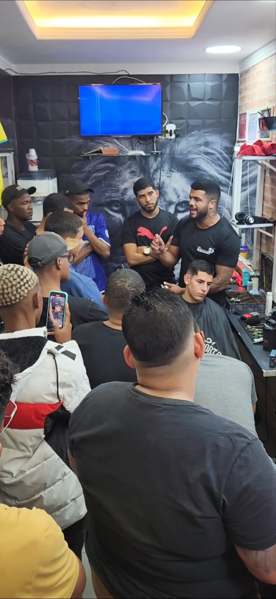
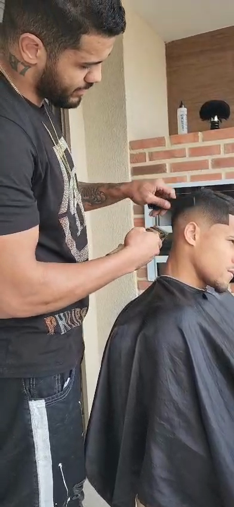
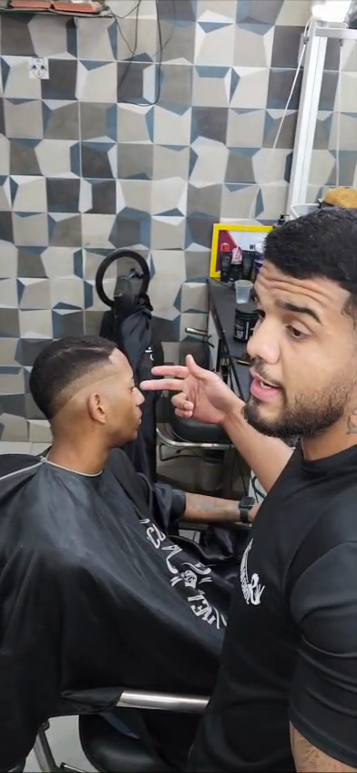
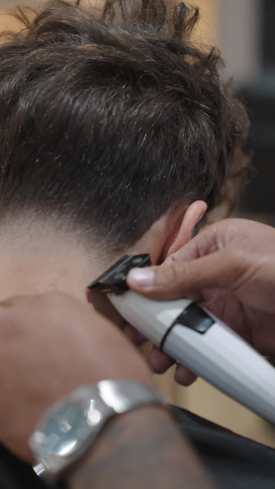
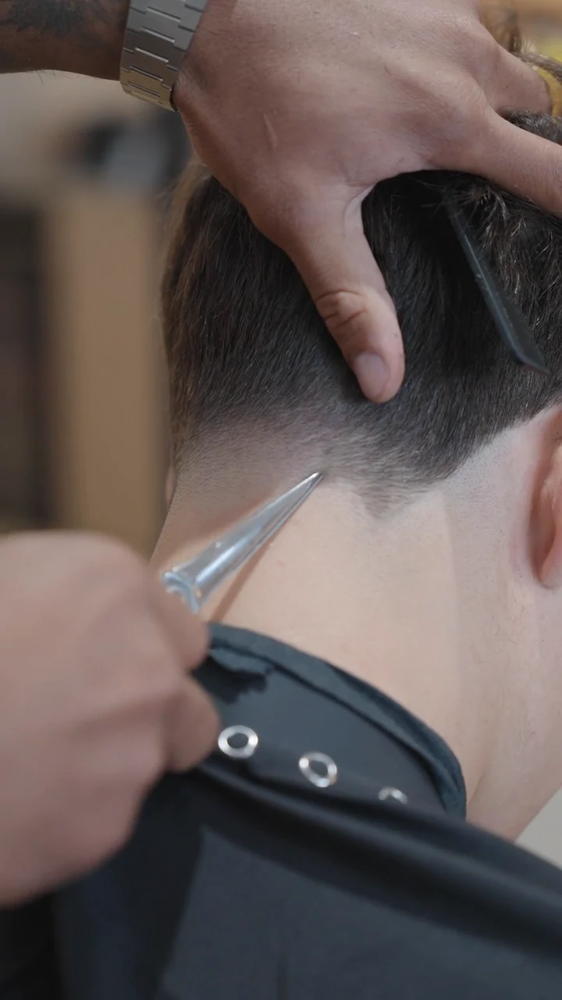

MAN SPACE ACADEMY · BLACK NOVEMBER
Aprende barbearia
com Patrick Monteiro.
Um curso de 3 meses, com turma até 8 alunos e horários a combinar contigo.
Para quem quer começar na barbearia e precisa de conciliar a formação com a vida que já tem.
Abre uma conversa com o Patrick no WhatsApp.

QUEM TE VAI ENSINAR
O primeiro corte do Patrick também correu mal.
Tinha 13 anos e queria cortar o cabelo. Acabou por fazê-lo sozinho. Nas palavras dele, «ficou terrível, ficou péssimo».
Mas ficou a vontade de aprender.
Começou a observar outros barbeiros e a praticar com amigos. Mais tarde, veio a primeira oportunidade profissional. E depois, os cursos, os clientes e os anos de trabalho.
Hoje, Patrick apresenta um percurso de mais de 16 anos na barbearia, mais de 100 alunos formados e mais de 30 mil atendimentos.
É essa experiência que traz para a Man Space Academy: um curso para quem quer entrar nesta profissão.


O TRABALHO DO PATRICK
O corte, de perto.


O CURSO
Três meses. Uma turma pequena. Um horário a combinar.
Se estás a pensar aprender barbearia, há algumas coisas que precisas de saber antes de decidir.
- Duração
- 3 meses de formação.
- Turma
- Máximo de 8 alunos.
- Horário
- Folgas, domingos, manhãs ou tardes. Combina com o Patrick a opção possível para ti.
- Pagamento
- Klarna ou pagamento mensal ao longo do curso. Confirma o valor e as condições de cada opção.
Pede o programa completo e conta ao Patrick qual é a tua disponibilidade. Assim, podes perceber se o curso se encaixa no que procuras.
BLACK NOVEMBER
Desconto exclusivo para os primeiros 5 alunos.
Esta é a condição de lançamento anunciada pelo Patrick. Fala com ele para saberes o valor do curso, o desconto e se ainda está disponível.
Não precisas de decidir já. Começa por esclarecer as tuas dúvidas.
A mensagem vai preparada. Podes editá-la antes de enviar.
O que podes querer saber.
O curso é para quem está a começar?
Patrick apresenta esta formação para quem quer entrar na área da barbearia. Diz-lhe se estás a começar ou se já tens alguma experiência para esclarecer os requisitos e o que vais aprender.
Consigo conciliar o curso com o trabalho?
A proposta inclui horários a combinar, como folgas, domingos, manhãs ou tardes. Confirma a tua disponibilidade com o Patrick antes da inscrição.
Quanto custa?
Pede o valor e as condições de pagamento pelo WhatsApp. Confirma também se o desconto Black November para os primeiros cinco alunos ainda está disponível.
Onde e quando começa?
O Patrick pode esclarecer as datas de início, o local e o programa completo na conversa pelo WhatsApp.